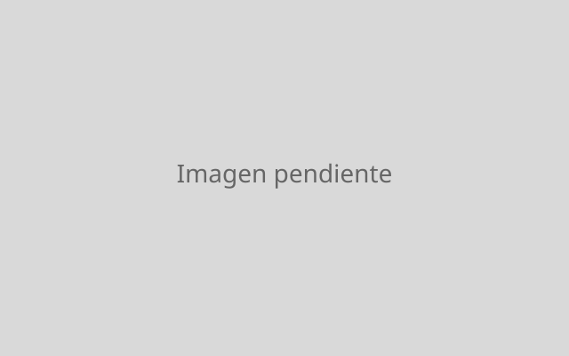

Sobre mí
Soy Jaret Rubio Delgado, estudiante de Ingeniería en Mecatrónica en el
Tecnológico de Monterrey (campus Monterrey). Durante el ciclo 2026–2027
participo en el programa DHIK en Alemania: un semestre de estudios en la
Hochschule Zittau/Görlitz seguido de un semestre de prácticas
profesionales en la industria alemana.
Me interesa el punto donde se encuentran el hardware y el software:
automatización industrial, robótica, simulación de procesos (gemelos
digitales) y redes de comunicación industrial. Recientemente empecé
también a desarrollar aplicaciones web, con el objetivo de construir mis
propias herramientas y plataformas de principio a fin (frontend y
backend).
Busco unas prácticas donde pueda combinar la ingeniería de sistemas con
el desarrollo de software.
Habilidades
- Programación
- Python, C/C++, MATLAB, JavaScript (en aprendizaje), HTML/CSS
- Industrial / Automatización
- PLC (Schneider Electric, SIEMENS), Ladder Logic, Universal Robots (UR)
- Simulación y CAD
- SolidWorks, MATLAB/Simulink, RobotStudio (ABB), Tecnomatix Plant Simulation, Process Simulate (Siemens)
- Microcontroladores
- Experiencia básica con STM32 (adquisición de datos y acondicionamiento de señales) en proyectos académicos
- Áreas de interés
- Redes de comunicación industrial, desarrollo web full-stack
- Idiomas
- Español (nativo), Inglés (B2 — TOEFL ITP), Alemán (A2 — Goethe A2)
Proyectos
Breakout — juego de arcade en Python

Clon del clásico rompe-bloques, desarrollado desde cero de forma
iterativa. Fue mi primer proyecto de programación completo: empecé con
una ventana y una pelota que rebota, y lo fui creciendo hasta un juego
con niveles, power-ups y puntajes.
- Hecho con: Python 3.11 y Pygame
-
Incluye: programación orientada a objetos (paleta,
pelota, bloques y power-ups como clases), detección de colisiones,
máquina de estados (menú / juego / pausa / game over), múltiples
niveles cargados desde archivos de texto, efectos de partículas y
sonido, power-ups (paleta ancha, multi-pelota, pelota lenta, vida
extra), sistema de vidas, dificultad progresiva y guardado de mejores
puntajes en JSON.
-
Qué aprendí: cómo se estructura un game loop, POO
aplicada, manejo de estados y assets, y diseñar niveles como datos
externos en lugar de código.
Código en GitHub (pendiente) ·
Demo (pendiente)
Celda robótica — propuesta y simulación
Proyecto de una materia del Tecnológico de Monterrey, con ABB como
socio formador. En equipo desarrollamos la propuesta de una celda
robótica industrial y la validamos mediante simulación en RobotStudio:
definición del layout, alcance del robot y secuencia de operación.
- Hecho con: RobotStudio (ABB)
- Contexto: proyecto académico en equipo, Tecnológico de Monterrey · socio formador: ABB
- Mi rol: desarrollo de la propuesta y de la simulación
Solo propuesta y simulación; no incluye implementación ni datos internos del socio.
Gemelo digital de una línea de producción
Proyecto de una materia del Tecnológico de Monterrey, con Carrier como
socio formador. Construimos el gemelo digital de una línea de
producción para modelar el estado actual y comparar propuestas de
mejora sobre el flujo del proceso.
- Hecho con: Tecnomatix Plant Simulation y Process Simulate (Siemens)
- Contexto: proyecto académico en equipo, Tecnológico de Monterrey · socio formador: Carrier
- Mi rol: modelado del gemelo digital y análisis de escenarios
Solo propuesta y simulación; no incluye datos de producción del socio.